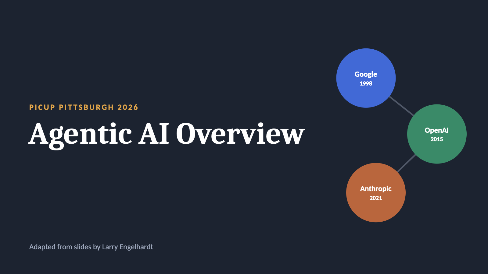

Agentic AI Overview
Adapted from slides by Larry Engelhardt (PICUP Atlanta DICE 2026), used with permission.

Links from the slides: Larry Engelhardt's full assessment framework, arxiv.org/abs/2607.15518 · MIT's report on AI in teaching and learning, aiandeducation.mit.edu/report
Use the arrow keys or swipe to move between slides. Download the PDF if you'd like a copy. These slides are not covered by the site's CC0 dedication; please ask the authors before reusing them.